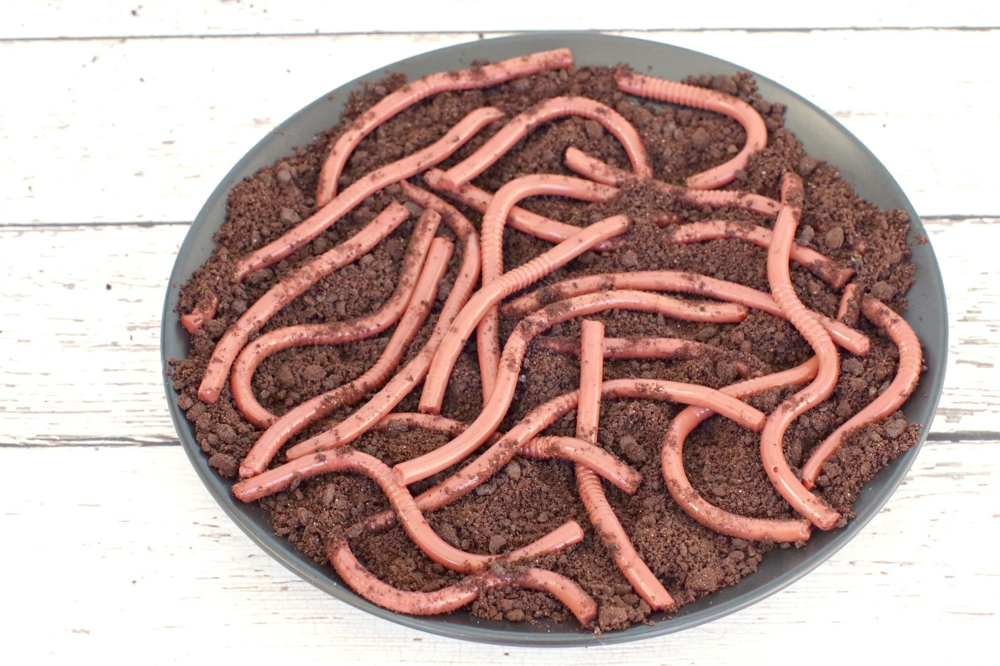

Garden Dirt Worms

Description:
Earth Day is coming and instead of the typical green and blue globe shaped treat, I wanted to make something that was a little different and really fun to make with kids! These Jello Worms and dirt are perfect!
Ingredients:
- worms from the garden
- raspberry jam
- 2c organic garden dirt
- 2T cocoa powder (dirt sweetener)
Steps:
- Wait for a rainy weekend
- Let the little buddies come out for Sun and snatch them up
- Drown dirt worms in raspberry jam for 22 hours
- Sift garden dirt with cocoa powder
- Take out worms to see if they are still alive, if not place atop garden dirt
- Take to your work potluck!
More Recipes